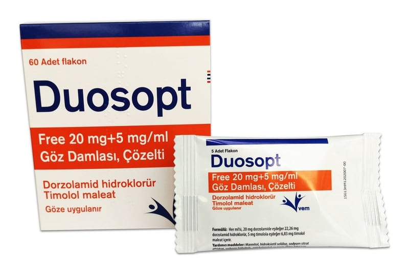

Duosopt Free 20 mg+5 mg/ml Göz Damlası, Çözelti, 60 Adet

Ne için kullanılır
KT · Bölüm 1DUOSOPT dorzolamid hidroklorür ve timolol maleat etkin maddelerini içermektedir. • Dorzolamid karbonik anhidraz inhibitörleri adlı bir ilaç grubunun üyesidir. • Timolol beta-blokör ilaç grubunun bir üyesidir. DUOSOPT, tek başına beta blokör göz damlası yeterli olmadığında, glokom tedavisinde yükselmiş göz tansiyonunu düşürmek için reçetelenmiştir.
DUOSOPT berrak, hafif viskoziteli ve renksiz veya hemen hemen renksiz sulu çözeltidir. Yüksek densiteli polietilenden yapılmış olan 0,2 ml’lik çözelti içeren 0,4 mL’lik flakonlar içerisindedir. Her kutuda toplam 60 adet flakon bulunmaktadır. DUOSOPT benzalkonyum klorür koruyucu maddesi içermez.